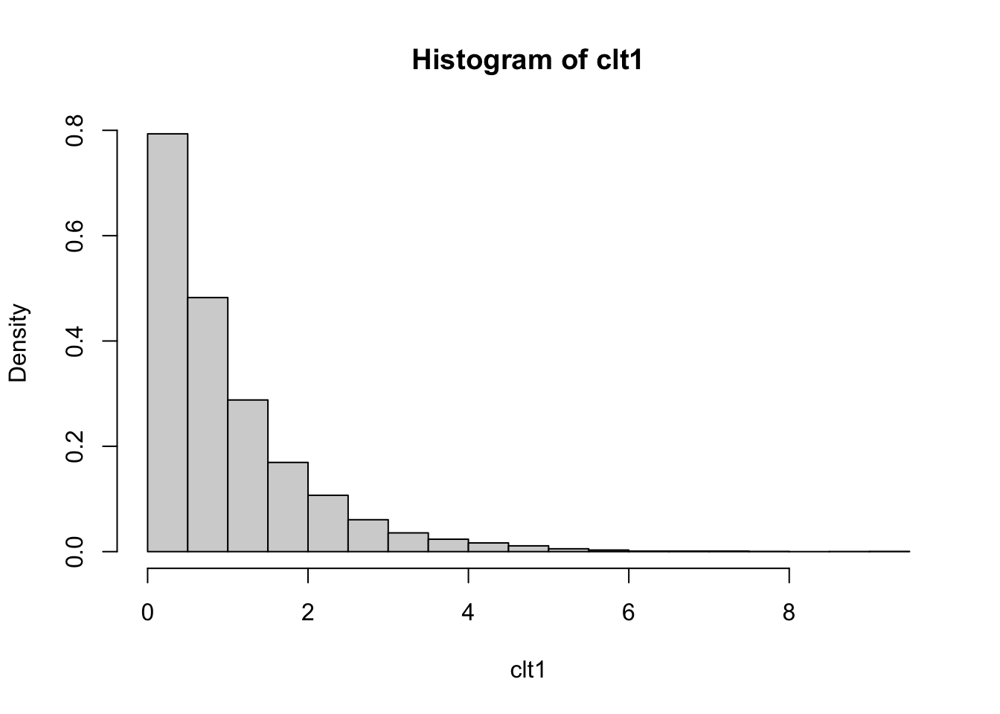

Chapter 12 Functions
From R4DS and the Solution book for R4DS:
x <- c(1:10, rep(NA,3))
cV <- function(x){
sd(x, na.rm = TRUE)/mean(x, na.rm = TRUE)
}
xVar <- function(x) {
n <- length(x[!is.na(x)])
m <- mean(x, na.rm = TRUE)
sq_err <- (x - m)^2
sum(sq_err, na.rm = TRUE) / (n - 1)
}From Richie Cotton’s DataCamp introductory course on function writing:
roll_die <- function(n_die){
die_sides <- 1:6
sample(die_sides, n_die, replace = TRUE)
}
roll_die(6)## [1] 3 3 2 6 4 5Let’s apply some of these simple ideas to D&D. Say I play a character that can cast the sleep spell. This scales to different levels.
At first level, one rolls 5 six-sided die.
## [1] 28If cast at higher levels, the spell adds 2 die per level above first: 7 die at second level, 9 die at third level, etc. Let’s address this by adding a level variable to our function.
sleep_scaled <- function(level){
if(level > 1){add_die = (level-1)*2
} else{
add_die = 0
}
sum(sample(1:8, size = 5 + add_die, replace = TRUE))
}A couple of things can be added to avoid the following goofy mishaps (or at least render useful error codes:
## [1] 27First we load Richie Cotton’s package {assertive}.
##
## Attaching package: 'assertive'## The following objects are masked from 'package:magrittr':
##
## is_greater_than, is_less_than## The following objects are masked from 'package:purrr':
##
## is_atomic, is_character, is_double, is_empty, is_formula,
## is_function, is_integer, is_list, is_logical, is_null, is_numeric,
## is_vector## The following object is masked from 'package:tibble':
##
## has_rownamesThen we get to work on the function:
sleep_scaled <- function(level = 1){
# assert_is_numeric(level)
if(any(is_non_positive(level))){
return("x contains nonpositive values, so the spell makes no sense")
}
if(level > 1){add_die = (level-1)*2
} else{
add_die = 0
}
sum(sample(1:8, size = 5 + add_die, replace = TRUE))
}
sleep_scaled(0)## [1] "x contains nonpositive values, so the spell makes no sense"## [1] 23## [1] 28Now, it would be useful to see the distribution of these rolls, to predict whether the spell would be effective.
